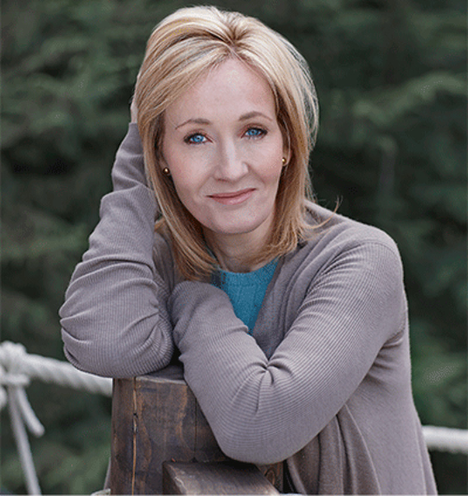
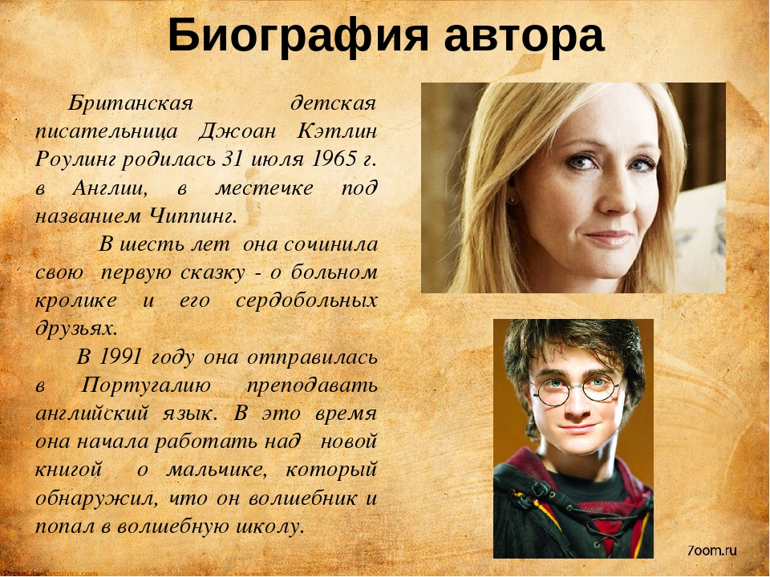
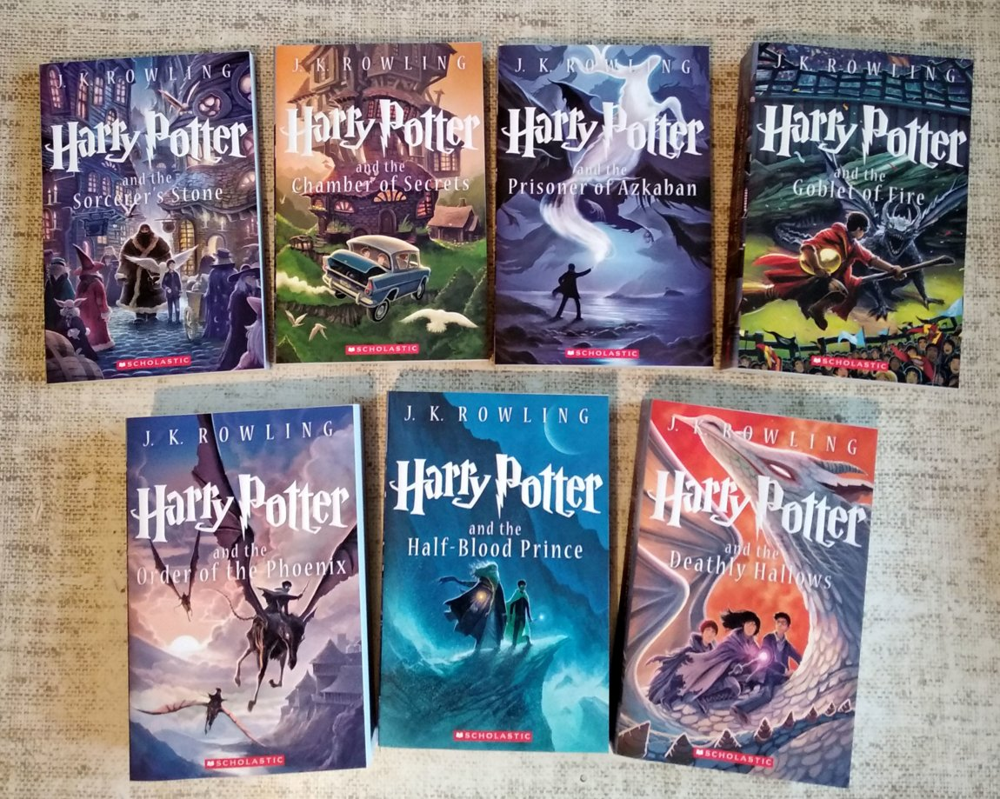

Автор произведений о "мальчике, который выжил" - Джоан Роулинг
Джоан Кэтлин Роулинг (англ. Joanne Kathleen Rowling) — невероятно популярная английская писательница, автор серии романов о Гарри Поттере (1997—2008), переведённых на десятки языков, в том числе и на русский. Офицер ордена Британской империи, Кавалер ордена Почётного легиона, Кавалер ордена Улыбки, лауреат премии Хьюго.
Родители Роулинг, Питер Джеймс, инженер Rolls-Royce, и Энн Волан познакомились в 1964 году на лондонском вокзале Кингс-Кросс в поезде, направлявшемся в Арброт. Они поженились 14 марта 1965 года. 31 июля 1965 года в Йейте в графстве Глостершир, Англия у них родилась дочь Джоан. Через год семья Роулинг пополнилась ещё одной дочерью — Дайанн. Когда Джоан исполнилось четыре года, семья переехала в соседнюю деревню Винтербурн. Роулинг училась в начальной школе Св. Михаила. Впоследствии высказывались предположения, что директор школы, Альфред Данн, стал прототипом директора школы Гарри Поттера — Альбуса Дамблдора. Юная Джоан часто писала фантастические рассказы и читала их сестре. Она вспоминала: «До сих пор помню, как я рассказывала ей историю, в которой она упала в кроличью нору и семья кроликов кормила её клубникой. Абсолютно точно, что первый рассказ, который я записала (когда мне было лет пять или шесть), был о кролике по имени Кролик. Он заболел корью и к нему пришли его друзья, в том числе гигантская пчела по имени мисс Пчела». В девять лет Роулинг переехала в Чёрч-коттедж в деревне Татшилл. Роулинг обучалась в средней школе Вайдин, где её мать работала в отделе науки. В одиннадцать лет она походила на Гермиону Грейнджер, девочку-всезнайку. А в шестом классе она подружилась с Шоном Харрисом, чей образ и бирюзовый форд «Англия» вдохновили её и позже появились в её творчестве. Она говорила: «Рон Уизли — это не живой портрет Шона, но на самом деле очень похож на него». В подростковом возрасте она прочитала автобиографию Джессики Митфорд, подаренную ей двоюродной бабушкой, и с тех пор журналистка и правозащитница стала для Джоан кумиром. Вообще о подростковом периоде Роулинг отзывалась как об «ужасном времени жизни»: мать болела, а с отцом складывались сложные отношения. Роулинг была старостой в школе. Перед поступлением в университет она изучала английский, французский и немецкий, и сдала экзамены на две отличные оценки и одну хорошую. В 1982 году она пыталась поступить в Оксфордский университет, но не прошла экзамены и попала в Эксетерский университет, который окончила со степенью бакалавра по французскому и классической филологии. Роулинг отмечала, что тогда больше увлекалась не учёбой, а The Smiths, книгами Диккенса и Толкина. После года учёбы в Париже Роулинг окончила Эксетер в 1986 году и переехала в Лондон, начав работать секретарём в исследовательском отделе «Международной амнистии».
Серия о Гарри Поттере: «Гарри Поттер и Философский камень» (1997) «Гарри Поттер и Тайная комната» (1998) «Гарри Поттер и узник Азкабана» (1999) «Гарри Поттер и Кубок огня» (2000) «Гарри Поттер и Орден Феникса» (2003) «Гарри Поттер и Принц-полукровка» (2005) «Гарри Поттер и Дары Смерти» (2007)
